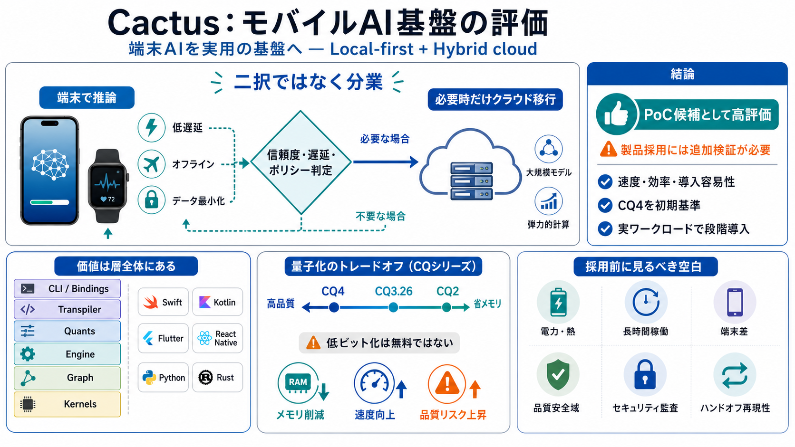

統合された開発導線
Engine、Graph、Kernels、Quants、Transpiler、CLI、各種バインディングまでを一つのエコシステムとして提供する。

Mobile AI, made practical
スマートフォン／ウェアラブルでのローカル推論を中心に、必要時だけクラウドへ移行するハイブリッドOSS。その価値と採用条件を整理する。
Executive verdict
Cactusは速度・効率・導入容易性を同時に狙う、実装指向のモバイルAI基盤である。製品採用には電力、熱、品質安全域、クラウド移行の追加検証が必要だ。
Engine、Graph、Kernels、Quants、Transpiler、CLI、各種バインディングまでを一つのエコシステムとして提供する。
端末別の速度・RAMと量子化後の精度を並べ、効率と品質のトレードオフを可視化している。
長時間稼働、端末差、セキュリティ監査、ハンドオフの再現性などはREADMEだけでは判断できない。
PoC候補として高評価。 CQ4を初期基準に、実ワークロードで品質と端末運用を通過した範囲だけ段階導入する。
The mobile constraint
端末は即時性・プライバシー・オフライン性に強いが、計算資源と電力が限られる。クラウドは高性能だが、通信遅延・費用・データ移転を伴う。
低遅延、オフライン、データ最小化に有利。一方でRAM、帯域、発熱、バッテリー、モデルサイズが上限になる。
大規模モデルと弾力的な計算資源を利用可能。一方でネットワーク依存、従量課金、プライバシー管理が増える。
軽量化して端末で処理し、端末では安全に完遂できない要求だけクラウドへ送る。 Cactusの中心命題はこの分業にある。
Local-first inference
量子化モデルを端末で実行し、信頼度や制約に応じてクラウドへハンドオフする。この構成が速度・費用・プライバシーの折衷点をつくる。
テキスト、音声、画像などをローカルのモデル／カーネルで推論する。
confidence_threshold、失敗、処理時間、ポリシーを確認する。
cloud_handoffを実行し、タイムアウト内で代替結果を取得する。
One integrated stack
モデル変換、実行、最適化、量子化、アプリ統合までを分断しない。独自モデルを実機に持ち込み、計測する工程が一つのスタックに収まる。
From model to device
Cactusはデモ用ランタイムに留まらず、モデル準備・サービング・ベンチ・テストまでの再現可能な開発導線を提供する。
対象モデルを実行し、端末上の挙動と出力を素早く確認する。
モデルを変換し、量子化やターゲット環境への適合を進める。
APIとして公開し、アプリや既存クライアントから統合評価する。
速度、メモリ、品質、回帰を同じ工程内で比較・検証する。
Beyond text generation
音声認識、画像入力、RAG、ツール呼び出しまでを想定する。単発のテキスト生成ではなく、実アプリに近い推論フローが射程に入る。
ローカル生成、会話、要約などを端末上で実行し、応答遅延とデータ移転を抑える。
音声入力の文字起こしを対象に含む。実用化には騒音、話者差、長時間音声での誤差評価が必要。
画像とテキストを組み合わせる入力を想定。端末カメラとの統合はプライバシー上の利点が大きい。
外部知識や機能を接続し、回答だけでなく検索・操作を含むアプリケーションフローを構成する。
Efficiency has a price
CQはRotation-and-codebook方式で、概ね4bit〜2bitへモデルを圧縮する。RAMと実行コストを下げる一方、ビット幅を攻めるほど品質リスクが増える。
Speed on Apple silicon
Gemma系モデルの例では、Mac M5 Maxで高いprefill／decode速度が提示される。iPhone 15・17系を含む端末別ベンチも、モバイル実行の成立可能性を支える。
2964tps
入力文脈をモデルへ取り込む処理速度。長い入力の初期応答時間に影響する。
154tps
トークンを逐次生成する処理速度。ユーザーが感じる生成テンポに直結する。
What it supports
Appleシリコン向け最適化とネイティブカーネルが、高いスループットにつながる可能性を示す。
What it does not prove
文脈長、バッチ、モデル版、熱状態、電源条件が変われば結果も変わる。自社条件での再測定が前提。
The quality cliff
CQ4は主要ベンチで比較的高い品質を保つ一方、CQ2ではARC-C 24.73という低下例が示される。最小ビットを選ぶことが最適化とは限らない。
Fallback is governance
低信頼時にクラウドへ切り替える設計は成功率を高めるが、データ移転・遅延・費用も発生させる。分岐条件は監査可能でなければならない。
端末で推論し、出力・信頼度・所要時間・エラー状態を取得する。
confidence_thresholdと送信可否、通信状態、制限時間を照合する。
cloud_handoffを実行し、cloud-timeout-ms内で結果を返す。
Traceability
なぜクラウドへ送ったかを記録する。
Data control
送信対象とマスキング範囲を定義する。
Calibration
信頼度自体が正しく校正されているか測る。
Savings shift the work
ローカル推論は従量課金と通信依存を抑える可能性がある。一方、複数端末・複数量子化設定の評価と運用が新しいコストになる。
端末で完結する要求が増えるほど、API従量課金と通信量を抑えられる。
ネットワーク往復を避け、待ち時間による離脱や失敗を減らせる可能性がある。
OpenAI互換インターフェースにより、統合の初期負担を抑えやすい。
SoC、RAM、OS、温度、バッテリー状態ごとに性能と安定性を測る必要がある。
モデルとタスクごとに、速度・容量・品質の安全域を探索する工数が生じる。
ローカルとクラウド双方の監視、障害対応、モデル更新、ログ管理が必要になる。
The missing evidence
READMEは製品説明として有用だが、実デプロイの保証ではない。採用判断では、技術・セキュリティ・法務・安定性の未確認項目を明示する。
連続推論時の消費電力、サーマルスロットリング、バックグラウンド実行、同時利用時の挙動が未評価。
判断質問：代表端末で30分以上、目標SLAを維持できるか。音声・画像・テキストがいつ外部へ移るか、ログに何が残るか、送信禁止データをどう止めるかを定義する。
判断質問：分岐理由と送信内容を監査・再現できるか。Cactus本体のLICENSEだけでなく、Hugging Face上のモデル規約、gated modelのトークン、音声データ法制を確認する。
判断質問：配布形態と商用利用が全ライセンスに適合するか。任意HFモデル変換はexperimentalとされ、OS別最適化や一部コア機能も変更されうる。
判断質問：固定版で回帰試験とロールバックを運用できるか。Four gates to adoption
PoCでは速度だけを測らない。品質、端末運用、ハンドオフ、ガバナンスを独立したゲートとして評価する。
長文要約、長期対話、専門語、長時間音声、画像入力を実データ分布で評価する。
低・中・高性能端末で初回応答、decode、RAM、電力、温度推移を測定する。
低信頼、通信不良、クラウド遅延、タイムアウト、ローカル再試行を故障注入で確認する。
送信可否、暗号化、保持期間、削除、監査ログ、モデルライセンスを運用手順へ落とす。
Adopt in stages
CQ4を起点に、クラウド移行を監査可能な形で限定実装し、代表端末と実データで四つのゲートを通す。合格した用途だけを本番へ広げる。
1モデル・1用途・代表端末に限定し、CQ4と非量子化基準を比較する。
端末範囲を広げ、ハンドオフ、監視、失敗時フォールバックを検証する。
品質安全域、熱・電力、法務・セキュリティ条件を満たした機能だけ公開する。
Sources and boundaries
本デックは提供されたレポートとGitHub READMEの要約に基づく。性能・品質・互換性は、採用時点のコミットと実デプロイ条件で再確認する必要がある。
アーキテクチャ、CLI、バインディング、量子化、端末別ベンチマーク、精度表、クラウドハンドオフに関する製品説明。
本デックの評価観点、数値、リスク、導入意見はユーザー提供資料を構造化・圧縮したもの。
提供資料に記載された代表値。対象モデル、量子化条件、端末、文脈長、seed、リポジトリ版を揃えて再現確認すること。
消費電力、発熱、長時間安定性、広範な端末差、セキュリティ監査、法的適合、クラウド移行のSLAは別途検証対象。
# Introduction to Cactus. A hybrid low-latency energy-efficient AI engine for mobile devices & wearables with NPU accele…
# Cactus Compute, Inc. Framework for on-device AI inference. Henry Ndubuaku's profile picture"). # Cactus. A low-latency…
On-device and Hybrid cross-platform AI framework. * **Cactus Hybrid Cloud:** Automatic cloud handoff based on model conf…
# cactus-compute/cactus. # Cactus. * Step 1: `brew install cactus-compute/cactus/cactus`. ## Cactus Engine.
[NEW]|Needle: a 26M tool-calling model distilled from Gemini. Deep dives into on-device AI, inference optimization, and …